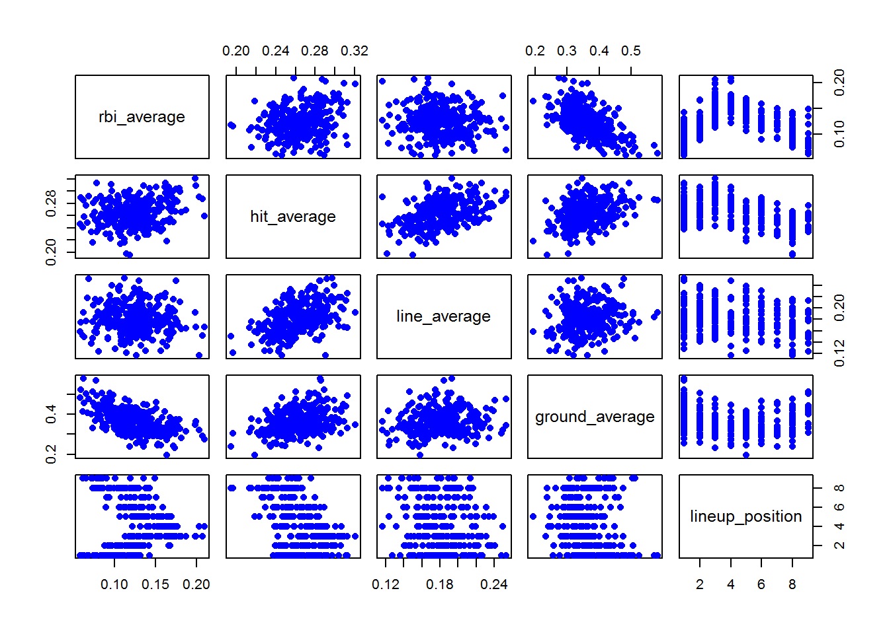
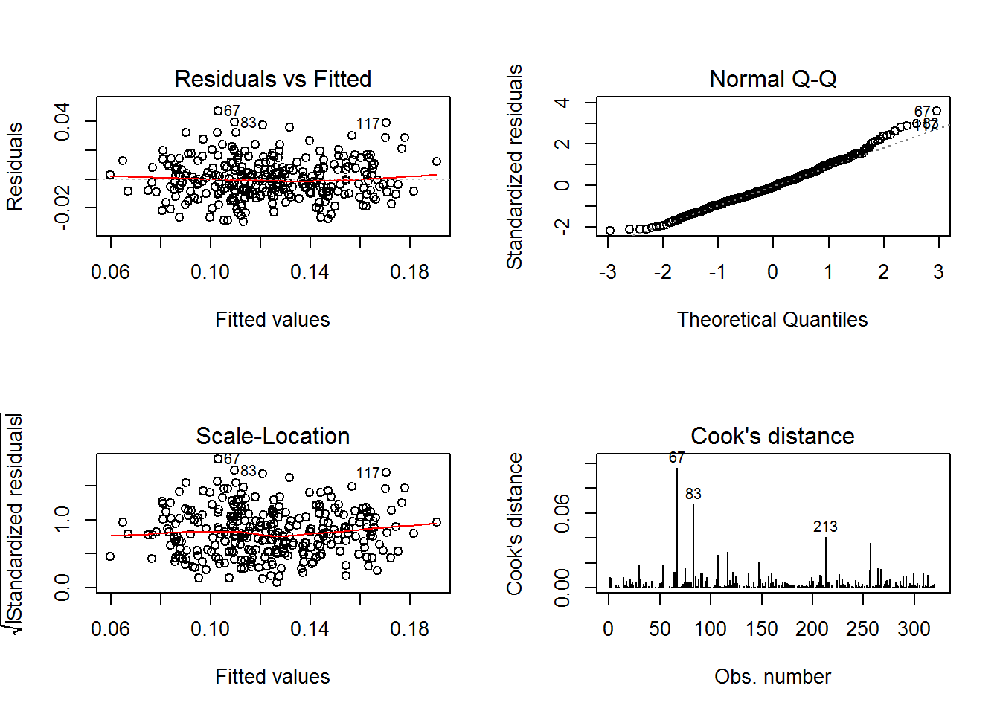

Final Project
Luis Eduardo Acosta Aparicio
Introduction
How many rbi (Runs Batted In) can a player earn in a regular season?
Which position in the line up could the player fit better in order to help the team to produce more runs? Which means more chance to win
I will be analyzing from my observational data set that I have collected over time from MLB regular seasons 2000-2016. In order to improve my data analysis I excluded pitchers, and players with less than 1000 at bat, also I chose the line up position with the most recurrent position in the past 16 seasons. The line up position is crucial for predicting. It is well known that players from 3 to 6 find more runners in score position than any other line up position.
The result will help scouts and team members to relocate players and predict rbi.
Knowing the data set
| Variables | Description |
|---|---|
| player_id | Player id |
| player_name | Player name |
| at_bat | Number of at bat |
| rbi_average | Total rbi divided by at bat |
| hit_average | Total hits divided by at bat |
| line_average | Total lines divided by at bat |
| ground_average | Total grounds divided by at bat |
| fly_average | Total flies divided by at bat |
| strikeout_average | Total strike outs divided by at bat |
| lineup_position | Most recurrent line up position |
path <- "https://raw.githubusercontent.com/luije87/Big-Data-Analysis/master/project.csv"
data <- read.csv(path)
mlb_data <- data[ , c("rbi_average", "hit_average", "line_average", "ground_average", "lineup_position")]attach(mlb_data)pairs(mlb_data, pch=16, col="blue") This pairs graph show us the correlation between variables. What I expected :
line_average and hit_average to have an strong correletation, meaning the line drive is hardest to catch (more hits) , than grounds and flies in this order.
lineup_position and rbi_average shows us positions 3, 4, 5 run batters in more than any other line up position.
Our model will use the following relation:
Rbi = (\(\beta_0\) + \(\beta_1\) * hit_average + \(\beta_2\) * line_average + \(\beta_3\) * ground_average + \(\beta_4\) * lineup_position) * AtBat
mlb_model <- lm(rbi_average ~ hit_average + line_average + ground_average + format(lineup_position), data = mlb_data)summary(mlb_data)## rbi_average hit_average line_average ground_average
## Min. :0.0584 Min. :0.1947 Min. :0.1161 Min. :0.1943
## 1st Qu.:0.1022 1st Qu.:0.2488 1st Qu.:0.1643 1st Qu.:0.3208
## Median :0.1219 Median :0.2621 Median :0.1809 Median :0.3575
## Mean :0.1231 Mean :0.2635 Mean :0.1814 Mean :0.3639
## 3rd Qu.:0.1412 3rd Qu.:0.2797 3rd Qu.:0.1971 3rd Qu.:0.4056
## Max. :0.2092 Max. :0.3209 Max. :0.2533 Max. :0.5813
## lineup_position
## Min. :1.000
## 1st Qu.:2.000
## Median :3.000
## Mean :4.071
## 3rd Qu.:6.000
## Max. :9.000summary(mlb_model)##
## Call:
## lm(formula = rbi_average ~ hit_average + line_average + ground_average +
## format(lineup_position), data = mlb_data)
##
## Residuals:
## Min 1Q Median 3Q Max
## -0.029749 -0.008996 -0.001147 0.007998 0.047274
##
## Coefficients:
## Estimate Std. Error t value Pr(>|t|)
## (Intercept) 0.065343 0.012480 5.236 3.04e-07 ***
## hit_average 0.660817 0.060822 10.865 < 2e-16 ***
## line_average -0.219223 0.034286 -6.394 5.94e-10 ***
## ground_average -0.261231 0.016442 -15.888 < 2e-16 ***
## format(lineup_position)2 0.014618 0.002614 5.591 4.94e-08 ***
## format(lineup_position)3 0.032195 0.003063 10.510 < 2e-16 ***
## format(lineup_position)4 0.042626 0.003268 13.044 < 2e-16 ***
## format(lineup_position)5 0.030952 0.002977 10.398 < 2e-16 ***
## format(lineup_position)6 0.015821 0.003328 4.754 3.06e-06 ***
## format(lineup_position)7 0.021401 0.004046 5.290 2.32e-07 ***
## format(lineup_position)8 0.017106 0.003018 5.669 3.29e-08 ***
## format(lineup_position)9 0.005194 0.004172 1.245 0.214
## ---
## Signif. codes: 0 '***' 0.001 '**' 0.01 '*' 0.05 '.' 0.1 ' ' 1
##
## Residual standard error: 0.01373 on 310 degrees of freedom
## Multiple R-squared: 0.7828, Adjusted R-squared: 0.7751
## F-statistic: 101.6 on 11 and 310 DF, p-value: < 2.2e-16The p-values for the selected variables are significants and Adjust R Square is 77%, meaning the model explain 77% the variability of the response around its means.
par(mfrow=c(2,2))
plot(mlb_model, which = 1:4)
Residual vs Fitted
Observed values are not far away from 0, which means the model fitted well:
residual = observed y - model-predicted y, values should be around 0.
We have three residuals that are away from 0; 67, 83 and 117
Lets predict one of those data points (67), Wilson Ramos, 35 RBI in 2017:
predict(mlb_model, list(line_average = 0.14903, ground_average = 0.4735, hit_average = 0.25961, lineup_position = 7)) * 280## 1
## 28.54172The prediction for 2017 season is not that close.
Normal Q-Q
Observations lie well along the 45-degree line, so we can asume that normality holds here.
Season (2017)
I picked 4 players with different positions in the line up and applied the model:
Yuliesky Gourriel

Y. Gourriel
At Bat : 529
RBI : 75
Most recurrent line up position : 7
| Variables | Values | Average |
|---|---|---|
| Hits | 158 |
0.29867 |
| Lines Drive | 88 |
0.16635 |
| Grounds | 218 |
0.41209 |
predict(mlb_model, list(line_average = 0.16635, ground_average = 0.41209, hit_average = 0.29867, lineup_position = 7)) * 529## 1
## 74.05549Jose Abreu

J. Abreu
At Bat : 621
RBI : 102
Most recurrent line up position : 5
| Variables | Values | Average |
|---|---|---|
| Hits | 189 |
0.30434 |
| Lines Drive | 92 |
0.14814 |
| Grounds | 229 |
0.36876 |
predict(mlb_model, list(line_average = 0.14814, ground_average = 0.36876, hit_average = 0.30434, lineup_position = 5)) * 621## 1
## 104.7012Jose Altuve

J. Altuve
At Bat : 590
RBI : 81
Most recurrent line up position : 1
| Variables | Values | Average |
|---|---|---|
| Hits | 204 |
0.32033 |
| Lines Drive | 102 |
0.17288 |
| Grounds | 236 |
0.4 |
predict(mlb_model, list(line_average = 0.17288, ground_average = 0.4, hit_average = 0.32033, lineup_position = 1)) * 590## 1
## 79.4323Evan Longoria

E. Longoria
At Bat : 613
RBI : 86
Most recurrent line up position : 3
| Variables | Values | Average |
|---|---|---|
| Hits | 160 |
0.26101 |
| Lines Drive | 102 |
0.16630 |
| Grounds | 236 |
0.36541 |
predict(mlb_model, list(line_average = 0.16630, ground_average = 0.36541, hit_average = 0.26101, lineup_position = 3)) * 613## 1
## 84.65801Conclusion
The predictions for players selected were close to their RBI in 2017. The model works as expected. The baseball game has a lot of stats that can influence our results. I learned we cannot exclude variables we know are important like lineup_position in this case which improved my predictions notably.
I will keep working on this model to improve it to help coaches to find the perfect fit in their line up.
References
Fan Graph - https://www.fangraphs.com
ESPN - http://www.espn.com/
Retrosheet - http://www.retrosheet.org/
Baseball Reference - https://www.baseball-reference.com/